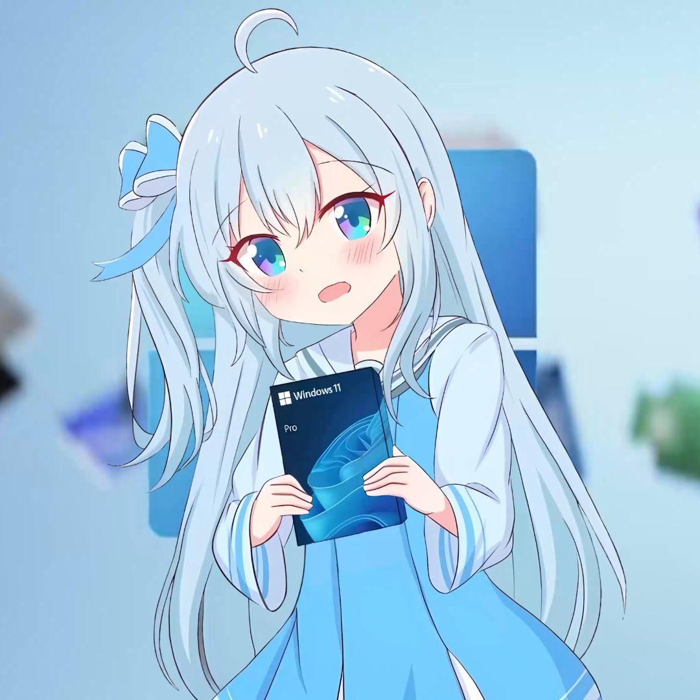

Frontend
HTML / CSS / JavaScript
Responsive UI / Animation

这里是我的个人空间。你可以在这里看到我的兴趣、正在学习的方向、做过的项目，以及一些零碎但有趣的想法。
我喜欢把视觉、技术和实际需求放在一起思考，让一个页面不只是“能用”，还希望它有一点记忆点。
Stay curious.
Keep building.
技术会变，学习能力和审美会留下。
HTML / CSS / JavaScript
Responsive UI / Animation
UI / Visual Design
Glassmorphism / Interaction

Automation / Scripts
Data / AI Experiments
Photography / Editing
Content / Visual Storytelling
New Tech / AI / Experiments
Build · Test · Iterate
每个项目都像一次小型实验。
欢迎来这里看看，也欢迎通过公开社交平台找到我。
 GitHub
GitHub 哔哩哔哩
哔哩哔哩 YouTube
YouTube 微博
微博 X
X Threads
Threads Facebook
Facebook Instagram
Instagram 抖音TikTok
抖音TikTok 微信公众号微信视频号
微信公众号微信视频号 Gmail
Gmail iCloud
iCloud